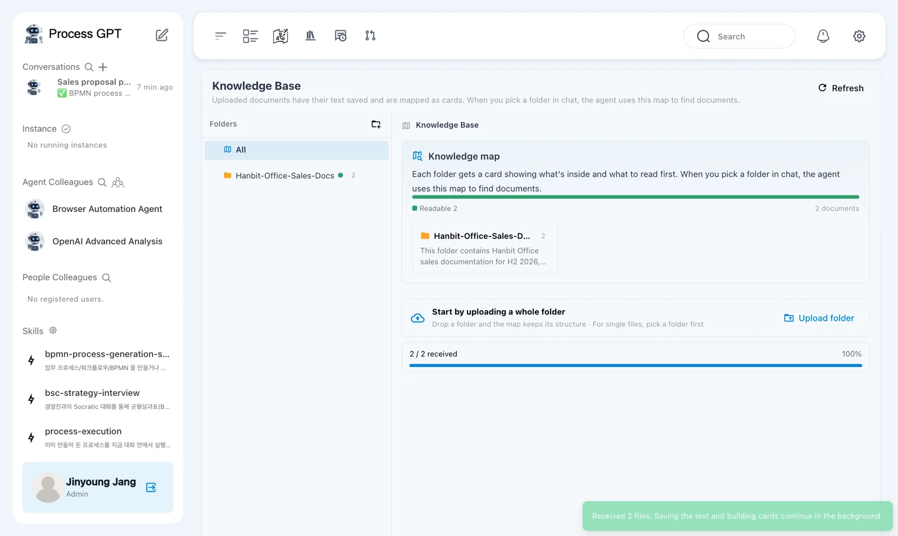
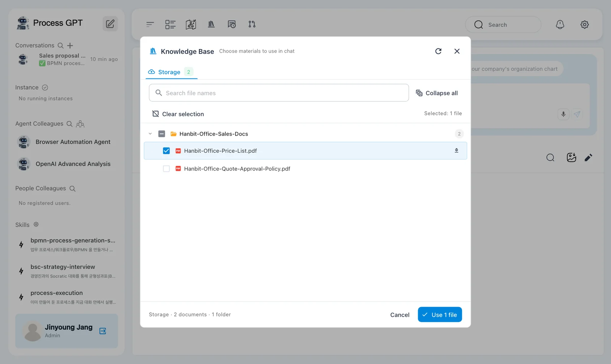
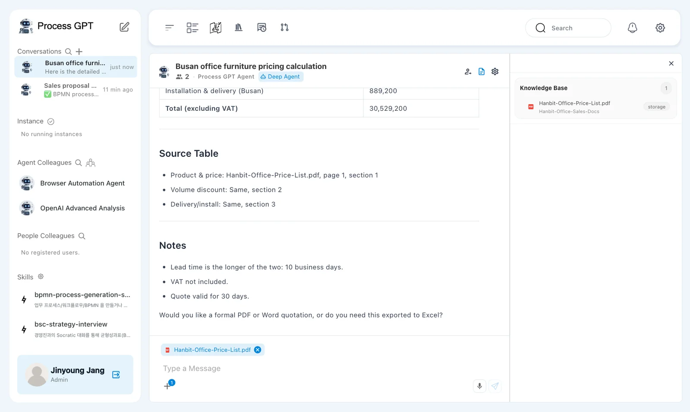
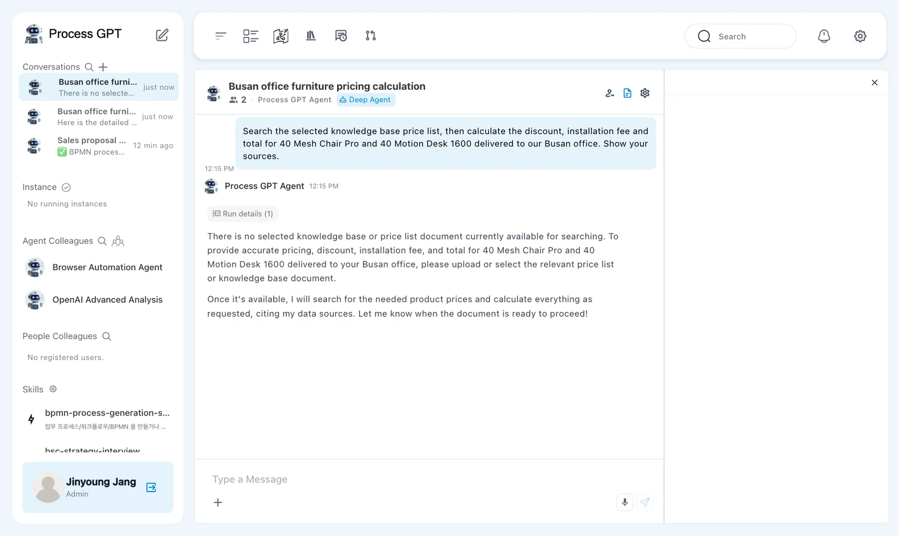

Upload Hanbit Office's price list and quote approval policy to the Knowledge Base as one folder. Pick the price list in chat and ask for a quote, and Process GPT calculates it from the tables and rules in the document. You'll also see what changes when you ask without picking it.
Why a knowledge base#
Ask an AI "How much are 40 Mesh Chair Pro?" and it can't answer if it doesn't know Hanbit Office's prices and discount rules. A made-up answer that sounds sure is even worse. The Knowledge Base is where you keep company documents. When you pick a document in chat, the agent finds it, reads it and answers from what it says.
| Without the knowledge base | With the knowledge base |
|---|---|
| Doesn't know company prices or rules → asks for material or answers in general terms | Finds the tables and clauses in the picked document, calculates, and cites them |
| You paste the document into every chat | Upload once, and anyone can pick it |
Practice files#
Download Hanbit Office sales documents (zip) and unzip it. The Hanbit-Office-Sales-Docs folder holds two documents.
| Document | Contents |
|---|---|
| Hanbit-Office-Price-List.pdf | Unit price and lead time of 6 products, volume discounts (5% for 20–49, etc.), installation fees by region |
| Hanbit-Office-Quote-Approval-Policy.pdf | The order for a bulk order quote: request → stock check → quote calculation → approval by amount → reply (used in Chapter 12) |
The Knowledge Base accepts PDF, HWP, HWPX, DOC, DOCX, PPTX, TXT, CSV and XLSX.
Try it 1 — Upload the whole folder#
- Click Knowledge Base (the book icon) in the top bar.
- In the Start by uploading a whole folder box, click Upload folder and choose the unzipped
Hanbit-Office-Sales-Docsfolder. You can also drag the folder onto the box. - "Received 2 files. Saving the text and building cards continue in the background." appears. After a moment, click Refresh at the top right.
Hanbit-Office-Sales-Docsappears under Folders on the left, and the Knowledge map on the right shows Readable 2 and a folder card.

The folder card in the Knowledge map carries a summary the AI wrote after reading the folder. The agent looks at this map to decide which document to read first.
For single files, pick a folder first
To upload a single file, first pick a folder under Folders on the left, then upload. If an unsupported format (such as .md) is mixed in, you'll see something like "Skipped 1 unsupported file", and only the rest is uploaded.
Try it 2 — Pick the price list and ask#
- In the chat box on Home (the pencil icon), click ＋ › Knowledge Base. The Choose materials to use in chat window opens.
- Click Expand all, check
Hanbit-Office-Price-List.pdfand click Use 1 file. A chip with the file name appears above the chat box. - Leave the agent set to Deep Agent and ask:

Search the selected knowledge base price list, then calculate the discount, installation fee and total for 40 Mesh Chair Pro and 40 Motion Desk 1600 delivered to our Busan office. Show your sources.
In our run, this answer came back after about 54 seconds (39 seconds in another run).
| Item | Answer | Source in the price list |
|---|---|---|
| Unit price | Mesh Chair Pro KRW 260,000, Motion Desk 1600 KRW 520,000 | 1. Product prices |
| Discount | 5% (40 of each → the 20–49 band) | 2. Volume discount |
| Amount after discount | KRW 29,640,000 (9,880,000 + 19,760,000) | |
| Installation fee | KRW 889,200 (Busan is outside Seoul and Gyeonggi → 3% of the amount after discount, more than the KRW 50,000 minimum) | 3. Installation and delivery |
| Total | KRW 30,529,200 (VAT not included) |

At the end of the answer, a Source Table names the section of the price list each number came from (in our run, "Hanbit-Office-Price-List.pdf, page 1, section 1" for prices, section 2 for the discount, section 3 for installation). The Knowledge Base section of the right panel shows the document used for this answer. Work it out yourself (260,000×40 + 520,000×40 = KRW 31,200,000 → 5% discount → KRW 29,640,000 → 3% installation fee KRW 889,200) and you get the same answer.
Say “Search the selected …”
Even with a document picked, a short question can make the agent ask you for material instead of searching the document. Start your question with "Search the selected knowledge base … document, then" and it reads the document first.
Try it 3 — Same question, nothing picked#
In a new chat (the pencil icon), send the same question without picking anything from the Knowledge Base.

In our run, the answer came after about 33 seconds. It says there is no selected knowledge base or price list document to search, and asks you to upload or select the price list. It didn't make up numbers in our run. In another run, it may incorrectly say the uploaded price list is not registered; select the price list file in the chat and ask again.
Picking a whole folder
If you check a folder instead of a file in the picker, the button becomes Use 1 folder, but in the current version the folder selection isn't passed to the agent, so it can't find the document. Expand the folder and check the file.
Next chapter#
You'll calculate from the price list again and again. In the next chapter you'll create an AI colleague for this job, Hanbit Office Quote Advisor, in the org chart (Chapter 9).
Check your understanding
- You uploaded
price-list.mdto the Knowledge Base and got Skipped 1 unsupported file. What should you do? - How did the answers to the same question differ with and without a Knowledge Base pick?
- What is the total for 10 Meeting Tables (8 seats) delivered to the Seoul head office? Ask with the Knowledge Base, then check it yourself against the price list.
Answers
- Convert it to a supported format such as PDF, DOCX or TXT and upload it again. Save it as PDF from a document editor, or save the contents as .txt.
- With the pick, it found the tables and rules in the price list and gave a 5% discount, a KRW 889,200 installation fee and a KRW 30,529,200 total, with sources. Without it, it said there was no selected knowledge base or price list document and asked you to upload or select the price list. The wording can differ, but uploading alone is not enough: select the file in chat.
- KRW 1,150,000 × 10 = KRW 11,500,000; 10 units get no discount (0%). Delivery and installation are free in Seoul, but Meeting Tables cost KRW 30,000 per unit to install in every region → KRW 300,000. Total KRW 11,800,000 (excluding VAT).